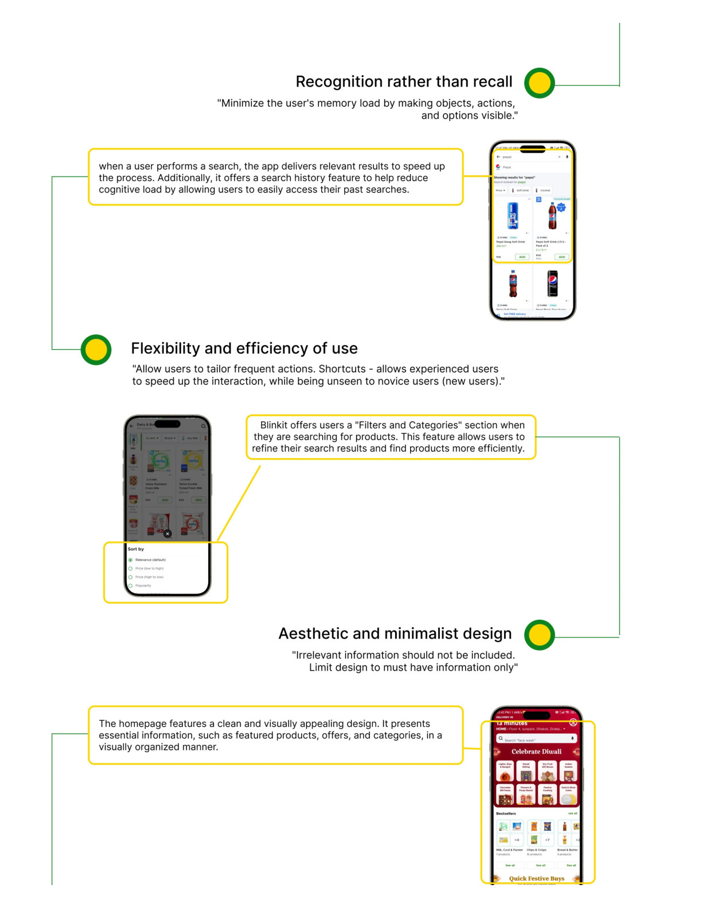
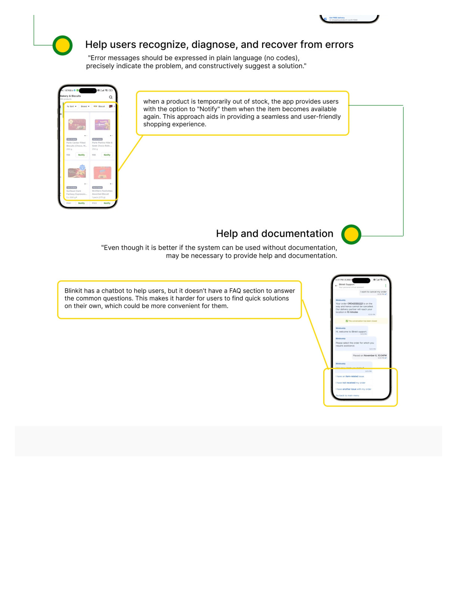

BLINKIT · HEURISTIC EVALUATION · UX RESEARCH
Blinkit — Usability Audit
A systematic evaluation of Blinkit's live app against Nielsen's 10 usability heuristics — identifying where a high-performing product has specific, fixable gaps in error messaging, user control, and visual clarity, while validating the strength of its core ordering flow.
View full PDF ↗
01 — OVERVIEW
Why evaluate Blinkit?
Blinkit is India's leading quick-commerce app — delivering groceries and essentials in under 10 minutes. It's a product that works well by most measures: high repeat usage, strong NPS, fast flows. But no high-performing product is free of usability gaps. This evaluation tests that assumption systematically.
A heuristic evaluation is expert-driven — not user-tested. It applies a structured framework (Nielsen's 10 heuristics) to identify violations that are likely to cause friction, confusion, or error — even in a product users love.
02 — METHODOLOGY
How the evaluation was conducted
Each of Nielsen's 10 heuristics was evaluated across the full Blinkit app — from onboarding and browsing, through cart and checkout, to order tracking and account management. Every finding is rated by severity (0 = not a problem, 4 = usability catastrophe) and supported by annotated screenshots.
Scope
Full app — all flows
Framework
Nielsen's 10 heuristics
Evidence
Annotated screenshots
Rating
0–4 severity scale per finding
Summary
Priority fixes + validated strengths
03 — FINDINGS
Where Blinkit underperforms
Visibility of System Status
Strong. Order status, delivery ETA, and packing progress are clearly communicated throughout the flow. The real-time countdown timer is an excellent implementation.
Match Between System and Real World
Language is clear and natural. Product names, categories, and action labels match the mental model of a grocery shopper. No significant violations found.
User Control and Freedom
Once a substitution is accepted, it cannot be reversed without cancelling the entire order. The lack of a "undo substitution" path forces users into an all-or-nothing decision — a significant control gap in a time-pressured flow.
Consistency and Standards
The interface follows standard mobile patterns consistently. Add/remove buttons, cart interactions, and navigation are predictable across sections.
Error Prevention
Cart errors are handled well — duplicate additions are handled gracefully, and minimum order value warnings appear before checkout.
Recognition Over Recall
Past orders, recent searches, and order history are prominently accessible. Users don't need to remember product names to reorder.
Flexibility and Efficiency of Use
Reorder shortcuts, quick-add from product lists, and schedule delivery serve both new and power users effectively.
Aesthetic and Minimalist Design
The promotional banner layer (3–5 banners on the home screen) competes for attention with the product search and browsing flow. During active shopping tasks, the promotional density creates visual noise that slows users down.
Help Users Recognise, Diagnose, and Recover from Errors
Payment failure messages say "Payment failed. Try again." with no diagnostic information — no indication of whether the issue is with the card, the network, or Blinkit's system. Users are left guessing what to fix.
Help and Documentation
In-app chat support is accessible throughout the order flow. FAQ content is appropriately placed and written in plain language.
04 — VISUAL EVIDENCE
Annotated screenshots

H3 finding: substitution acceptance with no undo path

H8 and H9 findings: promotional overload and non-diagnostic error messages
05 — SUMMARY
Priority fixes and validated strengths
Priority fixes
- Add undo substitution — even within a short time window (H3, Severity 3)
- Improve payment error messages with diagnostic context (H9, Severity 3)
- Reduce homepage banner density during active shopping sessions (H8, Severity 2)
Validated strengths
- Excellent real-time order status and ETA communication (H1)
- Natural, grocery-appropriate language throughout (H2)
- Strong reorder and recall features for power users (H6)
- Accessible in-app support at every stage (H10)
Heuristic evaluation finds the fixable gaps in products that users already love — the highest-leverage kind of UX work.